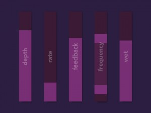
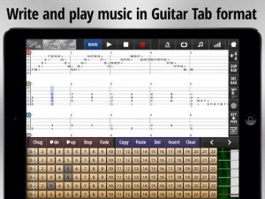
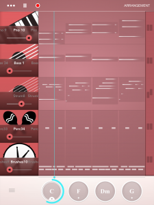
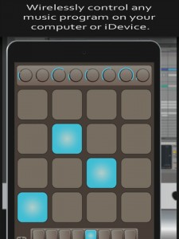
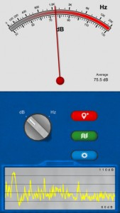
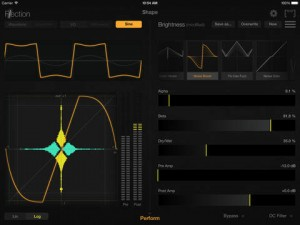
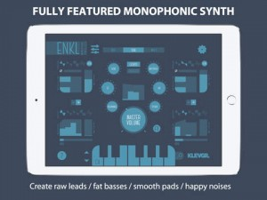
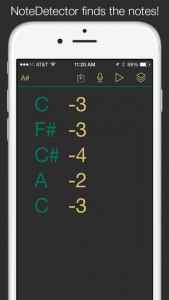
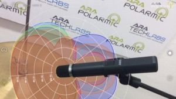
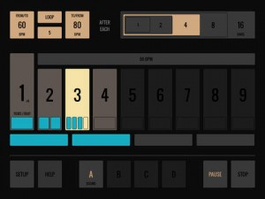

[appext 990917846]Phlox Phaser is a stereo phase shifting audio effect.
Built upon the tenet of simplicity, the flora project presents great sounding, lightweight audio effects using Inter-App Audio and Audiobus technologies to allow you to get the sound you want, without sacrificing processing power.
More information can be found at http:/timothy-j.com/flora
NB: Phlox Phaser requires either Audiobus or Inter-App Audio capable applications in order to operate. See http://audiob.us for more information.
Phlox Phaser
On May - 25 - 2015 ADD COMMENTS
Jam Maestro
On May - 25 - 2015 ADD COMMENTS
Jam Maestro – guitar tab sequencer
Jam Maestro is a powerful music composition tool for musicians interested in making guitar-centric music.
Sequence up to 16 instruments together, including Guitar, Bass and Drums, and compose songs in guitar/drum tab format.
Midi sequence and play background apps in your compositions using the Midi and Inter-App Audio instrument types.
Easily construct harmonies and see the relationship between notes thanks to a unique interface. Instantly share tab ideas with friends and bandmates via Dropbox. Playback with highly realistic samples. Export tabs to PDF/TXT and render tabs to wav/m4a format.
Full version features:
– 5 Instrument types: Guitar, Bass, Drums, Midi, Inter-App Audio.
– Inter-App Audio Host and Node support.
– Connect up to 4x Inter-App Audio Effects.
– Effects: Reverb, Delay, EQ, Chorus, Flanger, Vibrato, Tremolo.
– Full Midi In/Out compatibility
– Midi Sequencing
– Export/Import Midi files
– Export tab to PDF/TXT file
– Create your own Drum Kits.
– Audiobus 2.0 support, including State Saving that captures tab information (share your songs in Audiobus presets!)
– AudioCopy support.INSTRUMENTS:
• Load up to 16 instruments, all midi in compatible.
• 5 Instrument Types: Guitar, Bass, Drums, Midi, Inter-App Audio
• Realistic sound, OVER 4000+ (painstakingly) recorded samples.
• Full guitar fretboard (22 frets).
• Palm muted equivalents for every guitar note for that heavy CHUG sound.
• Any custom guitar tuning in the range of Standard to Drop C possible (in most cases alternative tunings have been fully resampled for most realistic sound). Even wider ranging tunings now possible.
• One-touch Chords allow you to forget tricky finger position (+ define up to 25 of your own).
• Unique interface allows dynamic key changing as you play.
• Use guitar fretboard or drum pads as a midi controller to play background apps/midi devices.
• iPad version ‘Dual Mode’ allows you to play 2 instruments simultaneously, including 2 separate midi compatible apps/devices.DRUM KIT CREATOR:
• Use own samples or background midi app sounds.
• Up to 20 pads, each which can be assigned with 2 sounds for cut off (eg. Open and Closed Hi-Hat).
• All custom kits fully compatible with internal sequencer
• Drum Kits using local samples are fully Midi In compatible.
• Create Interfaces for background midi drum apps and sequence using internal sequencer.
• Easily import and export your custom drum kits and share with others.SOUNDPACKS
All Soundpacks now come unlocked in the Full Version.
• Guitar: Acoustic, Metalcore, Shimmer, Stoner Doom, Bright Clean, Epic lead.
• Bass: Studio Tone, Blacklisted, Hazzard.
• Drum: Metal Drums, Rock Drums. Metal Drums Pro, Rock Drums Pro, Power Drums, Punk Drums, Vintage Drums, Jazz Drums, Vinyl Drums, Bongos, Tabla, Drum Machine 808, Industrial, Atmosphere, Percussion Kit, TimpaniTAB:
• Guitar/Bass/Drum Tab Sequencer.
• Midi Sequencer
• Intuitive interface – program in notes just by touching them, rather than messing around with a numpad.
• Play in almost any time signature.
• Key analysis tools.
• Jam Mode means you can record all instruments to tab simultaneously as you jam over your backing instruments.
• Tempo/Repeat/Mixer/Panning Control.EXPORT:
• Save tabs in .jam format – export via iTunes or straight to Dropbox to share with friends/bandmates instantly.
• Share tabs as PDF/TXT file.
• Export tabs as midi file.
• Render tabs as wav/m4a files.
• Audiobus 2.0 Support
• AudioCopy SupportNote: iPhone 4s or higher recommended. Some users experience problems with iPhone 4.
Tin Pan Rhythm
On May - 25 - 2015 ADD COMMENTS
Not much of a description provided (by the dev) on this new app, however the demo video does a great job of showing what is possible with Tin Pan Rhythm. Enjoy!
Bring song ideas to life with Tin Pan Rhythm.
Compose and arrange short musical phrases through a process of play and discovery.
The simple interface guides you along: create a chord progression, then arrange the band in real time.
Use your creations as background music, inspiration for songs, or as practice loops for your real-life instrument.
Record and share your music or use it inside your favorite apps.
Nerdery: Audiobus, InterApp audio, Dropbox, AudioCopy, Audioshare.
Demo video
Find more info @ http://www.tin-pan.com/
[appext 963594351]
AirPads
On May - 25 - 2015 ADD COMMENTS
[app 982405805]AirPads – Wireless MIDI Drum Pad controller for iPad, iPhone, and iPod Touch
AirPads is the ultimate, simple MIDI drum and sample controller for iOS. Trigger samples in your favourite music program on your computer or device at the speed of hardware.
AirPads provides a set of pads for triggering samples and knobs to control parameters in real-time. Simply load the app, connect it with another app on your device or your computer via Bluetooth, and start playing!
AirPads utilizes iOS 8 Bluetooth MIDI LE technology, which allows for latency comparable to wired hardware.
AirPads is optimized for use with DAWs such as Ableton, Maschine, Logic Pro, FL Studio, Reason, Reaper, or any other MIDI-accepting program with sample-triggering features. AirPads can also be used for playing melodic instruments such as VST synthesizers and other iOS apps such as Animoog.
AirPads features:
– 8 groups of 16 pads, displayed 16 at a time on screen
– 4 knobs (8 on iPad) for real time MIDI CC control
– Split screen mode on iPad in landscape view allows for 2 sets of 16 pads and 8 knobs to be played at once
– Bluetooth LE MIDI support for virtually zero latency
– Global velocity setting**Note: Please make sure you are running iOS 8, have an iPad 3+/iPhone 4S+/iPod Touch 5th gen and that your Mac is Bluetooth LE MIDI compatible and running OSX 10.10.**
Sound Multimeter
On May - 25 - 2015 ADD COMMENTS
[appext 991564348]Sound Multimeter takes the look and feel of our popular Network Multimeter app and applies it to audio measurement.
This app is as easy to use as it is powerful. One glance can tell you if the sound around you is loud or soft, and with a tap you can switch to a frequency analysis to determine if the noise is coming from a high-pitched whistle or a low frequency hum.
A slide-out graph can show the recent history of the sound level measurements in decibels or display the spectrum of the incoming sound with a smooth curve clearly defined over top and the peak frequency highlighted.
In addition this app can plot the level and frequency information as place marks on a map and store them for future reference. Great for real estate agents, architects, city planners, or anyone who would just like to know the quietest path to walk the map clearly color codes the measurement points in accordance to their sound level and provides a quick link to copy that information to the clipboard for sharing.
Sound Multimeter was designed for the iPhone and iOS 8.
for more info – http://jacksonsoftware.ca/faq.html
Flection – the ultimate waveshaper
On May - 12 - 2015 ADD COMMENTS
Flection is the ultimate waveshaper for iPad. Select one of the more than 30 base transfer functions and adjust it with exceptional accuracy and flexibility. Use the pre-equalizer for additional frequency-specific shaping. No less than six different real-time audio visualisations (including spectrum difference view and I/O audio histogram) give you a complete picture of the audio before and after processing. Mix between your four favourite shaping presets in performance mode. Full Audiobus and Inter-App Audio compatibility allows for the interconnection with other iPad apps.
Flection is an advanced precision tool for shaping your sound. It offers high quality stereo audio processing at very low latency, flexible control and multifaceted visual feedback. Waveshaping is typically known to work great for guitar distortion, but you can use Flection just as well to spice up your drums, mangle your vocals or enhance your synths.Grab more details from the official site – http://www.elephantcandy.com/app/flection/
[appext 988756169]
Enkl – monophonic synthesizer
On May - 12 - 2015 ADD COMMENTS
This fully featured monophonic synthesizer can create a huge variety of sounds. Fat basses, stabby leads, glitchy noises, old style chip tune sounds (including arpeggios), weird percussion, you name it. Enkl does the job!
Enkl comes with 93 high quality factory presets, all crafted by professional music producers. Of course it is possible to create new ones and save.
The Extended Keyboard makes Enkl really fun to play in standalone mode, choose scale, key and hit it off!
With Inter App Audio, AudioBus and MIDI support it’s easy to connect the app to other DAW apps, MIDI generator apps or external devices.
When it comes to MIDI, Enkl supports both MIDI IN and MIDI OUT. It’s even possible to play other MIDI compatible instruments with the Extended Keyboard.
Noteworthy features:
• Realtime rendered audio – no samples involved
• Two separate oscillators with separate LFO’s
• Oscillators can generate Triangle, Sawtooth, Square or Noise waveforms
• Oscillators can be summed or multiplied together
• Each LFO has its own ADSR and modulates its oscillator’s pitch or volume
• High cut and low cut filter with resonance (also controllable via MIDI)
• Chiptune-style arpeggiator
• Legato mode
• Ping-pong delay as a post effect
• Three band EQ as a post effect
• MIDI support (including IAA MIDI and Virtual MIDI)
• Extended Keyboard for live performing (also sends MIDI to any output port)
• Local on / off
• Pitch bend, Modulation, Low Cut, High Cut and Resonance controllable via MIDI
• Comes with 93 factory presets
• Documentation within app
• Inter App Audio support
• AudioBus support including state saving
[appext 968693910]
NoteDetector 2
On May - 12 - 2015 ADD COMMENTS
[appext 986801690]• NoteDetector is the one and only way to discover musical notes on your iPhone or iOS device.
• Record yourself singing humming and NoteDetector will analyze that recording and display the notes!
• NoteDetector not only shows you the notes but can also lay them out on a guitar fretboard or display the notes right on a keyboard.
• Now you can easily turn those great musical ideas you get throughout the day into actual music.
• Use note detector to help figure out your favorite songs.
• See exactly where to put your fingers on your guitar or keyboard!
• Save your recordings when the inspiration hits you and get back to them later.This is version 2.0! NoteDetector has been in the Apple App Store since version 1.0 in 2009!
We are working hard to make NoteDetector better all the time! Stay tuned for free updates!
Arapolarmic ONE
On May - 12 - 2015 ADD COMMENTS
[app 972592099]This app is a technology preview of Arapolarmic (The world’s first system for monitoring the directivity of microphones)
Arapolarmic ONE is a reduced version of Arapolarmic with fewer functionalities and a different and simpler User Interface.
With this version you will be able to check Aratechlabs technology at no cost by monitoring the directivity of one predefined microphone (industry-standard mic AKG C 1000 S for version)
Anyway, if you don’t have the real mic you can check the technology by downloading a PDF file located into the app.
Arapolarmic ONE makes the visualization of the microphone and its polar pattern, integrated within its audio environment (microphone set and sound sources) possible using Augmented Reality technology, providing visual reinforcement for positioning microphones on any set.
It is a very useful tool for teaching audio, recording studios, microphone sales, sound engineers, music producers, musicians…
Arapolarmic ONE features:
-Match the microphone only with one predefined mic position (one 3D pose)
-Track the mic in real time showing its distinctive polar pattern (all frequencies at the same time)
-Photo (Take and share photos)
-Directivity selector switch (check the different directivities of the model)
-Augmented Reality edition ( Manual Rotation and scale of the polar pattern)Aratechlabs reserves the right to anonymous track and report user’s activity inside the app.
For more info about Arapolarmic ONE and our products visit http://www.aratechlabs.com and www.facebook.com/aratechlabs
For the best use of the tool please read the User Guide tapping the info button within the app and watch the tutorials
http://www.aratechlabs.com/arapolarmic-tutorials-using-microphone-polar-patterns/
Metronom
On May - 12 - 2015 ADD COMMENTS
“Metronom” is a very powerful metronome app that will help you to learn rhythms, speed changes and, for example, paradiddles!
You’ll get all the essential features of a metronome and a bunch of bonus features like an advanced speed and rhythm trainer. It’s all bundled into one user interface – so you’ll have everything at your fingertips. It’s very easy, and you won’t need much time to master it.
For electronic musicians, we’ve integrated a MIDI master clock to sync all your grooveboxes, DAWs and drum machines.
Take this wonderful piece of software now for the introductory price of just $0.99.
FEATURES:
– 4 well selected metronome sounds
– extremely accurate
– simple and clear user interface
– everything in one window
– speed trainer (speed up, slow down or Loop)
– change speed after 1 / 2 / 4 / 8 / 16 bars
– rhythm trainer (play quarters, eights, triplets & sixteenth)
– edit every step individually
– time signatures from 2/4 to 9/4 (also 2/8 …)
– integrated help deskMIDI:
– master clock to sync all your soft- and hardwareGrab more info here – http://metronom.monoplugs.com
[appext 971974768]


{kind=link}
{kind=link}
{kind=link}
{kind=link}
{kind=link}
{kind=link}
{kind=link}
{kind=link}
{kind=link}
{kind=link}